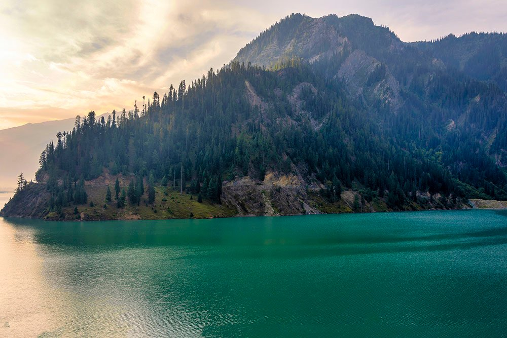

Untouched & Off-Beat Kashmir
Venture into unspoiled Himalayan valleys known intimately by our Srinagar team—from log-wood hamlets along the Kishanganga in Gurez to Chattergul’s pastures, Mughal springs in Anantnag, and 360° vistas atop Sinthan Pass.
Beyond the Postcard Trail
Six Secret Circuits of Kashmir
Filter by district or circuit below. Every off-beat excursion is arranged privately with experienced local mountain drivers and vetted stays.
Signature Off-Beat Route · 04 Nights / 05 Days